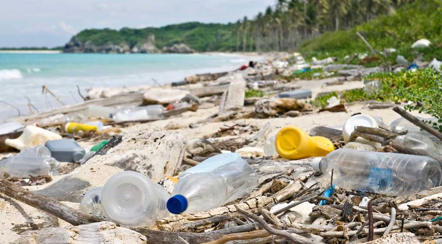
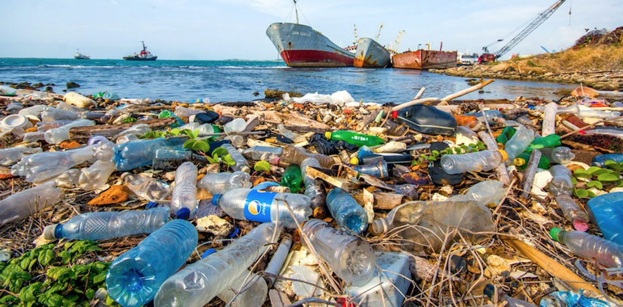

Afecta a la tierra:
Los plásticos clorados pueden liberar químicos dañinos al suelo, que luego pueden filtrar hacia el agua subterránea u otras fuentes de aguas en las inmediaciones. Ello puede causar serios daños en las especies que consumen el agua.
Afecta a la fauna marina:
La polución por plástico puede potencialmente envenenar a los animales, lo cual puede afectar de manera negativa el suministro de alimentos del ser humano. La polución por plástico es altamente dañina sobre los grandes mamíferos marinos. Se ha determinado que algunas especies marinas, tales como las tortugas de mar, contienen grandes cantidades de plásticos en su estómago.Por lo general en estos casos el animal muere de hambre, porque el plástico bloquea el aparato digestivo del animal. A veces los mamíferos marinos quedan enredados en productos plásticos tales como redes de pesca, lo cual los puede llegar a dañar o aún producirles la muerte

Afecta al oceano:
Una vez los objetos de plástico llegan al medio marino tardan entre décadas y cientos de años en degradarse. ... Durante todo este tiempo hasta que se degraden, todos los objetos de plástico que llegan al mar pueden causar graves daños a la fauna marina.
